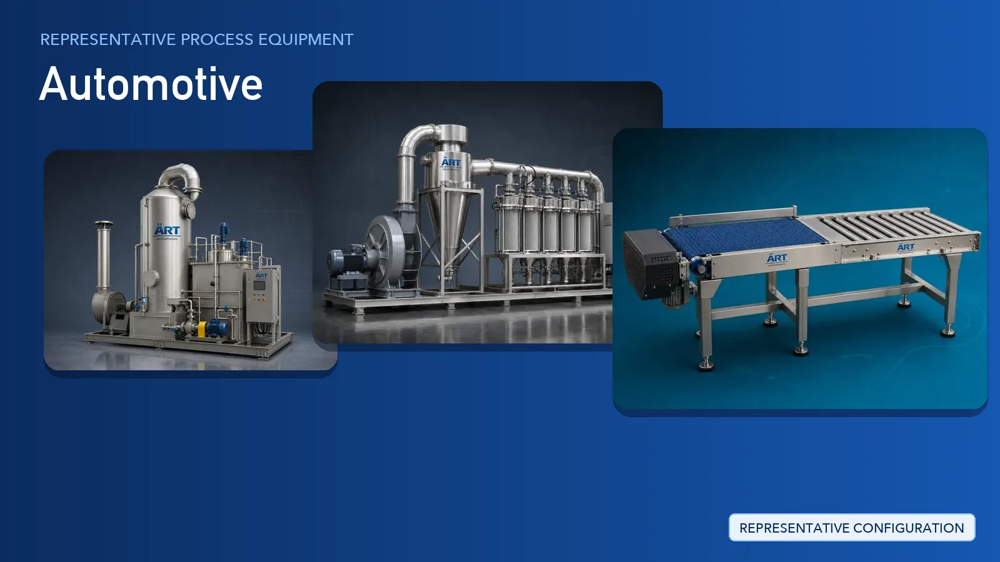

Automotive Plant & Machinery Solutions (Dust Extraction, Conveying & Material Handling Systems)
The automotive industry covers passenger cars, two-wheelers, three-wheelers, commercial vehicles, tractors and the wide network of auto component and ancillary units that supply them.

About Automotive processing
ART Mechatronics supplies the plant infrastructure that supports these facilities: dust and fume extraction at source, centralised extraction and filtration, emission control, conveying and material handling, robotic handling cells, plant utilities and automation controls. Every system is engineered around the existing shop-floor layout and supplied on a turnkey basis with design, installation, commissioning and after-sales support.
Complete Automotive Process Flow
Sheet metal, castings, forgings, sub-assemblies and bought-out components are received and moved into the production area.
Keeps material flow steady between stores and the shop floor.
Parts, bins and trolleys are moved between departments, workstations and buffer areas without manual carrying.
Supports:
- Repeatable delivery routes
- Reduced manual movement of heavy bins
- Better use of available floor space
Welding fumes, grinding dust, casting dust and paint mist are captured at the workstation, close to the point where they are generated.
Ensures:
- Cleaner breathing air at the workstation
- Less dust settling across the shop floor
- Safer working conditions for operators
Typical dust and fume sources in an automotive plant:
- Welding and brazing stations
- Grinding, buffing and deburring
- Casting, fettling and shot blasting
- Paint booths and surface finishing areas
- Machining chip and swarf handling
Captured air from multiple workstations is carried through a common ducting network to central filtration units, and process air from wet or chemical operations is treated before discharge.
Suitable for:
- Plants with many dust and fume generating points
- Paint, plating and chemical process areas
- Compliance-driven emission requirements
Assembly halls, paint areas, quality rooms and utility blocks are supplied with conditioned and circulated air.
Maintains controlled conditions in critical plant areas.
Repetitive lifting, transfer and pick-and-place tasks are handled by robotic cells linked to the plant control system.
Ensures:
- Consistent handling cycles
- Central monitoring of connected systems
- Easier integration with existing lines
Metal offcuts and process scrap are compacted for disposal or recycling, and finished components are packed for dispatch to OEMs and export markets.
Suitable for component supply and export packing.
Machinery Required for Automotive Plant
- Fume Extraction System
- Dust Extraction System
- Centralised Dust Collection System
- Cartridge Dust Collector Machine
- Pulse Jet Dust Collector Machine
- Wet Scrubber
- Air Handling Unit
- Hvac System
- Roller Conveyor
- Slat Conveyor
- Automated Guided Vehicle – AGV
- Material Handling Robot
- PLC Automation Control Panel
- Hydraulic Press/ Bailing Press
Turnkey Automotive Plant Solutions
ART Mechatronics offers complete turnkey plant systems for automobile and auto component facilities, including:
- Process and utility layout design
- Source-capture and centralised extraction systems
- Ducting design and fabrication
- Conveying and material handling systems
- Robotic handling cell integration
- Plant ventilation and air management
- Automation & control panels
- Installation & commissioning
- After-sales support
We customize solutions based on:
- Plant layout and number of extraction points
- Type of dust or fume generated
- Component size and handling flow
- Automation level required
- Local emission and safety requirements
Why Choose ART Mechatronics for Automotive
- Experience in dust, fume and air-quality systems for engineering plants
- Source-capture and centralised extraction designed around your shop-floor layout
- Conveying and handling systems matched to component size and flow
- Robotic handling and automation integration
- Plant utility and ventilation systems from a single supplier
- Heavy-duty industrial construction
- Installation, commissioning and after-sales support
- Global export capability
Machinery in a Automotive plant
Where it's used
Get pricing & specs for the Automotive plant
Share the product, target capacity, current process and plant location. These details help our engineers discuss the right machine or line configuration.
One partner, from design to start-up
ART Mechatronics designs, manufactures, installs and commissions your Automotive plant solution with regional presence in India, UAE and Thailand.